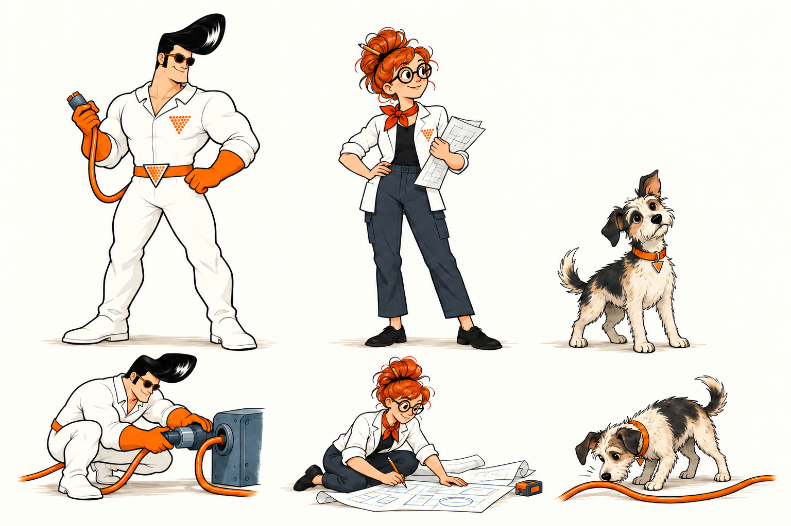
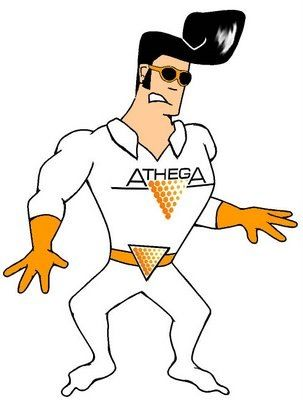

01 / En sammanhängande riktning
Nyfikenhet med en egen karaktär.
En fantasifull bildvärld med tre återkommande figurer. En lugn, modern webbplats som gör erbjudandet lätt att förstå.
Manualen samlar en möjlig fortsättning på alternativ 3. Illustrationerna får stå för berättelsen och humorn. Typografi, navigation och layout hjälper besökaren att hitta rätt.

Första scenprovet med hela trion. AI-genererad konceptbild, ännu inte en slutlig originalillustration. Klicka på bilderna för full storlek.
Det vi bygger vidare på
- Athega-orange och befintlig logotyp.
- Serietidningsstil som nästa bildspår.
- Athegamannen, en kvinnlig karaktär och en hund som föreslagen ensemble.
- Alternativ 3 som grund, med mindre magasinkänsla.
- Befintliga webbtexter ska behållas.
Det som ska bedömas
Karaktärernas slutliga form, deras roller, typsnittsparet, den varma bakgrundsfärgen och detaljerna i sidornas uppbyggnad. Manualen är ett beslutsunderlag och ändrar inte den publicerade sajten.
02 / Igenkänning över tid
Tre figurer. Ett gemensamt universum.
Karaktärerna ska vara lätta att känna igen även i små utsnitt. De får lösa problem tillsammans, upptäcka något eller testa en idé. Alla tre behöver inte synas i varje bild.

Athegamannen
Igenkänning: stor svart framåtsvept frisyr, mörka solglasögon, vit dräkt och orange handskar.
Personlighet: trygg, handlingskraftig och lätt självironisk. Får fundera, pröva och ändra sig.
Behåll: originalets breda axlar, kraftiga bröstkorg, armar och lår samt kompakta silhuett och färger. Låt honom arbeta i scenen, utan stora hjälteposer.
Uppfinnaren (arbetsnamn)
Igenkänning: kopparröd hårknut med penna, runda glasögon, vit arbetsjacka, mörka byxor och orange scarf.
Personlighet: nyfiken, uppmärksam och experimenterande. Tar lika mycket initiativ som Athegamannen.
Behåll: en egen silhuett. Växla vem som tänker, bygger och testar så att rollerna inte blir låsta.
Hunden (arbetsnamn)
Igenkänning: liten och rufsig, ljus päls med mörka fält, asymmetriska öron och orange halsband.
Personlighet: hittar det andra missar. Nosar, tittar och följer spår.
Behåll: naturligt hundbeteende. Humorn ligger i situationen; hunden behöver varken prata eller använda verktyg.

Förankring i Athega. Athegamannen kommer från sajtens befintliga bildarkiv. Den kvinnliga figuren utgår från skissen Tobbe delade i r2d2. Hunden är ett nytt förslag. Dräkternas triangelsymboler hör till karaktärerna och ersätter inte företagets logotyp.
Innan slutlig produktion: välj slutliga ansikten, proportioner, hundens teckning och eventuella namn. Ta sedan fram front-, sido- och trekvartsvyer samt ett fåtal återkommande poser. Det här bladet är en första skiss, inte en låst karaktärsstandard.
03 / Bilden ska berätta något
En ren seriestil med små berättelser.
Visuella regler
- Handritad, tydlig konturlinje. Något kraftigare ytterkontur och lättare detaljer.
- Begränsad färgskala, huvudsakligen plana färger och diskret skuggning.
- Varmvit bakgrund med luft runt motivet.
- Orange framhäver en viktig del eller förbindelse. Färgen behöver inte täcka hela bilden.
- Vuxna, stiliserade figurer med uttrycksfulla poser. Samma detaljnivå på figurer och miljö.
- Text och knappar ligger i HTML, aldrig inbakade i illustrationen.
Berättelseregler
- En tydlig handling per bild: undersöka, bygga, testa eller förbättra.
- Figurerna samspelar med motivet. Undvik poserande framför en kamera.
- Låt funktion och humor gå att upptäcka utan förklaring.
- Variera miljö och situation. Alla tjänster ska inte illustreras med samma byggklossar.
- Undvik nostalgiskt kontorspynt, slumpmässiga kugghjul, neonhjärnor och robotmaskotar.
- Illustrationer är metaforer. Kundcase och medarbetarpresentationer använder verkliga uppgifter och porträtt.
| Sammanhang | Motividé att utveckla | Bildens uppgift |
|---|---|---|
| Startsida | Trion löser ett problem tillsammans. | Förmedla nyfikenhet, erfarenhet och personlighet. |
| Systemutveckling | En fungerande konstruktion byggs ut utan att stanna. | Visa vidareutveckling och ansvar för helheten. |
| AI & maskininlärning | Flera försök jämförs, ett resultat undersöks. | Betona experiment, utvärdering och omdöme. |
| Teknikgranskning | Figurerna följer en koppling in under ytan. | Gestalta att förstå hur något faktiskt fungerar. |
| Små detaljbilder | En blick, en tass eller ett verktyg från en större scen. | Skapa igenkänning utan ännu en stor illustration. |
Detta är motivbriefar, inte nya påståenden eller kundcase. Nya illustrationer ska granskas i den storlek där de ska användas.
04 / Befintlig avsändare, lugnare inramning
Orange visar vägen.
Behåll den orange logotypen. Använd originalfilen utan omritning, filter eller genererad ersättning. Ge den fri yta motsvarande minst halva dess höjd. Illustrationerna får en kompletterande, dämpad blå ton.
Athega-orange
#ff6600 · --orange
Logotyp, accenter, länkunderstrykningar och handlingsknappar.
Bläck
#111315 · --ink
Rubriker, text, fokusmarkering och enstaka mörka ytor.
Vitt
#ffffff · --paper
Huvudyta och innehåll som behöver tydlig läsro.
Varm neutral
#f4f2ed · --neutral
Föreslagen stödyta. Ingen pappersstruktur eller gulnad effekt.
Illustrationsblå
#6b7f8a
Främst i bilderna. Ska inte konkurrera med orange i gränssnittet.
Linje
#dedfdb · --line
Diskreta avdelare. Inte ensam markering av viktiga kontroller.
Läsbarhet före färgeffekt
Mörk text på orange ger cirka 6,34:1 i kontrast. Orange på vitt ger bara 2,94:1. Använd därför mörk text i orange knappar och mörk text med orange understrykning för länkar på ljusa ytor. Föreslagen skärpning av dagens design: även betonade huvudrubriker får mörk text på vitt; orange används som detalj. Orange text på mörk yta fungerar bättre.
Beräknat från de angivna färgvärdena. Detta är inte en tillgänglighetsgranskning av hela sajten. Logotypen är en separat varumärkestillämpning.
05 / Redaktionell karaktär i lagom dos
Ett rubriktypsnitt. En enkel lästext.
Föreslaget typografipar
Georgia till huvud- och sektionsrubriker.
Helvetica Neue med Segoe UI och Arial som reserv
till brödtext och navigation. Inga externa fontanrop behövs. Det
exakta utseendet varierar mellan operativsystem.
Nyfikna på att utforska nytt, med erfarenhet av vad som håller.
Vi är experter på den senaste mjukvarutekniken och erbjuder den till våra kunder.
| Nivå | Dator / mobil | Vikt & radavstånd |
|---|---|---|
| H1 | 52 / 36 px | Georgia 700 · 1,12 |
| H2 | 36 / 28 px | Georgia 700 · 1,2 |
| H3 / kortrubrik | 24 / 22 px | Georgia 700 · 1,25 |
| Ingress | 22 / 20 px | Sans 400 · 1,5 |
| Brödtext | 18 / 18 px | Sans 400 · 1,65 |
| Navigation | 16 / 16 px | Sans 500 · 1,4 |
| Etikett / bildtext | 13–14 / 13–14 px | Sans 500 · 1,5 |
Löptext får högst cirka 65 tecken per rad. Undvik tunna vikter, långa versalrubriker, dekorativa kursiver och stora citat som bryter sönder startsidan. En H1 per sida. Bryt långa svenska ord vid behov, utan fasta radbrytningar som bara fungerar på en skärmstorlek.
06 / Samma system, olika uppgifter
Erbjudandet ska gå att hitta direkt.
En gemensam innehållsbredd på högst 1216 px, 24 px sidmarginal på dator och 20 px på mobil. Använd avståndsskalan 8, 16, 24, 32, 48, 64 och 96 px. Varje nytt avsnitt behöver inte en egen bakgrundsfärg, ram eller etikett.
Startsida
Tjänstesida
Bildformat: planera stora scener för 16:9 eller 2:1, mindre motiv för 4:3. Generera eller komponera för formatet; skär inte bort ansikten och handling för att fylla en ruta. De första skisserna här är 3:2 och visas därför utan beskärning. På mobil kan en förenklad komposition behövas.
Provsida: pröva inramningen
Startsidesutsnitt med befintliga texter. Provet visar rubrik, ingress, illustration, tjänster och kontakt. Det är inte en komplett implementation av sajten. Växla typsnitt för att bedöma hur mycket redaktionell känsla ni vill ha.
Öppna provsidan i ett eget fönster. Datorläget använder tillgänglig bredd i manualen; i eget fönster kan du se den vid full skärmbredd. Kontrollerna kräver JavaScript, själva innehållet gör det inte.
07 / Återkommande beteenden
Små, begripliga komponenter.
Exempel: mörk text på orange, understruken textlänk och en liten rörelse vid pekare eller tangentbordsfokus.
Knappar och länkar
- En tydlig primär handling per avsnitt.
- Minst 44 × 44 px som designmål för kontroller och menylänkar.
- Synlig fokusmarkering med mörk kontur och ljus separation.
- Länkar går att förstå utan enbart färg. E-postlänkar visar adressen.
- Högst 4 px hörnradie som förslag. Undvik många olika kortformer.
Kort och navigation
- Tjänste- och bloggkort har inga dekorativa pilikoner.
- Rubriken får orange understrykning vid hover och fokus.
- Hela kortet kan vara en länk om det bara har ett mål.
- Mobilmenyn ska fungera med tangentbord och utan JavaScript.
Rörelse
- 150–250 ms för enkel återkoppling på kontroller.
- En hund som tittar eller en koppling som reagerar kan prövas som enstaka detalj.
- Ingen ständig animation vid text som ska läsas.
- Ingen scrollkapning eller innehåll som först måste animeras fram.
-
Respektera
prefers-reduced-motion. Automatiskt återkommande rörelse behöver kunna pausas.
Mobil och läsbarhet
- Stapla innehåll efter läsordning, inte efter skrivbordets kolumnplacering.
- Kontrollera 320, 390, 768 och 1440 px samt 200 % zoom.
- Sidfoten ska vara kompakt och behålla tydliga tryckytor.
Systemutveckling
Seniora utvecklingskonsulter som hjälper er att utveckla, modernisera och förvalta system oavsett teknik, plattform eller var i livscykeln ni befinner er.
08 / Så håller vi ihop det över tid
En gemensam källa för form och innehåll.
I Eleventy-sajten
- Innehåll fortsätter ligga i befintlig Markdown och startsidans datafil.
- Gemensamma färger, avstånd och typografi samlas i aktiva Sass-variabler.
- Mallar väljer bildplacering och komponentvariant. Innehållsfiler får inte bli sidbyggare.
- Ingen backend, nytt ramverk eller extern fonttjänst behövs för denna riktning.
- Prova startsida, tjänstesida, Om oss och blogg innan formen sprids till hela sajten.
Bildproduktion
- Lås karaktärsblad och grundstil efter gemensamt val.
- Skriv en kort bildbrief med handling, format och användning.
- Bifoga samma karaktärsblad och en godkänd stilbild till varje ny generering.
- Granska poser, anatomi, ansikten, proportioner och kontinuitet.
- Exportera webbversioner med rimliga dimensioner. Behåll original och prompt separat.
- Sätt bredd och höjd på bilder. Ladda bilder under första vyn senare. Dekorativa bilder får tom alt-text; informativa bilder får en kort beskrivning.
Filstruktur vid en framtida implementation
assets/img/brand/characters/ för fastställda
referenser och assets/img/illustrations/ för
publicerade illustrationer. Manualen och arbetsmaterial ska
uttryckligen undantas från Eleventy eller lagras utanför sajtens
input. Dessa mappar har inte skapats i repot.
Återanvändbar bildbrief
Syfte: Illustration till [sida/avsnitt] på Athegas webbplats. Budskap: [vad besökaren ska förstå]. Handling: [en konkret handling, exempelvis testa en koppling]. Figurer: [ingen / en / två / hela trion]. Bifoga fastställt karaktärsblad. Miljö: [enkel, meningsfull miljö med tillräckligt tomrum]. Stil: ren europeisk serieteckning, tydliga bläckkonturer, begränsade plana färger och lätt skuggning. Palett: Athega-orange #ff6600, mörkt bläck, varmvit och dämpad blå. Format: [16:9 / 2:1 / 4:3], samt plan för mobil. Bevara: figurernas silhuetter, ansikten, kläder och hundens teckning. Undvik: inbakad text, slumpmässiga symboler, extra figurer, barnsliga proportioner, kontorsstockmotiv och onödig rekvisita. Kontroll: fungerar handlingen och igenkänningen även i publicerad storlek?

Illustrationerna är skapade med det inbyggda imagegen-verktyget. Karaktärsbladet bygger på originalfiguren, den tidigare kvinnliga figuren och det valda seriestilsprovet. Scenen använder karaktärsbladet som referens. Sammanfattade bildbriefar för skisserna finns i genereringsprompter.txt.
09 / Från skiss till gemensam manual
Det vi behöver bestämma.
- Karaktärerna: är trion rätt? Justera framför allt graden av gullighet, ålder och hundens form innan referenserna låses.
- Typografin: Georgia med enkel sans, eller enbart sans? Jämför i provsidan med samma bild och samma texter.
- Bakgrunden: godkänna varm neutral som stödfärg, med vitt som huvudyta.
- Bildmängden: börja med en större startsidesscen och en mindre bild per tjänstesida. Utvärdera innan fler bilder beställs.
- Första genomförandet: bearbeta alternativ 3 på startsidan och en tjänstesida. Behåll innehållsredigeringen enkel.
Nästa version av manualen bör innehålla de valda karaktärerna och en granskad riktig startsida, inte fler parallella stilar.